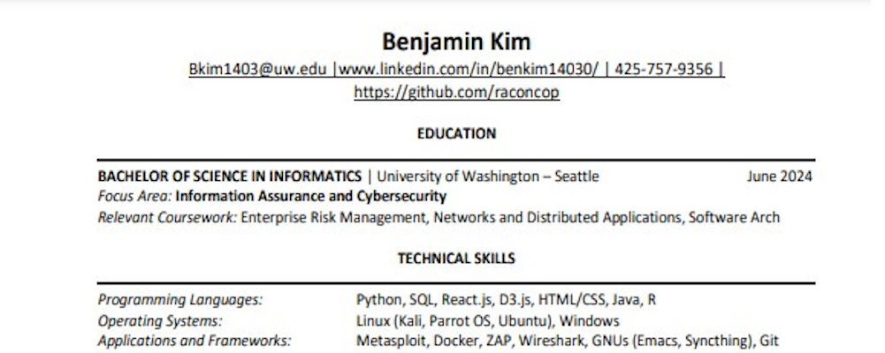
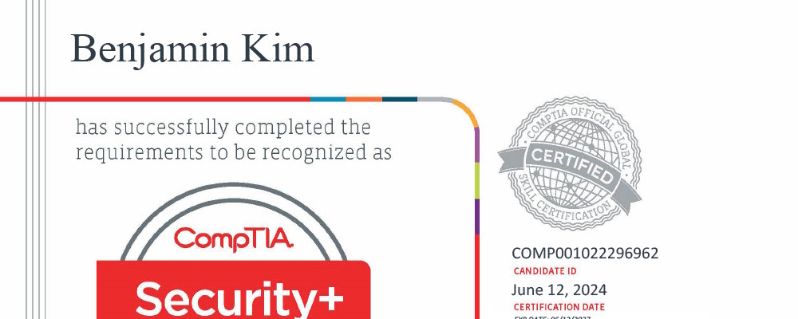
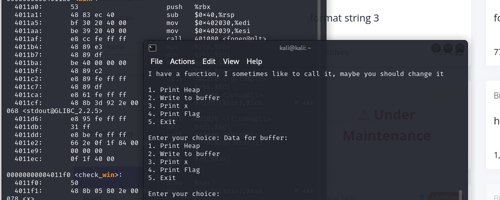
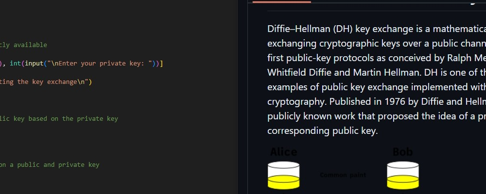
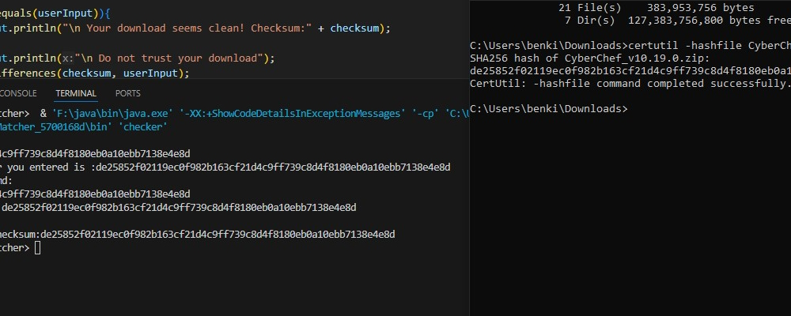
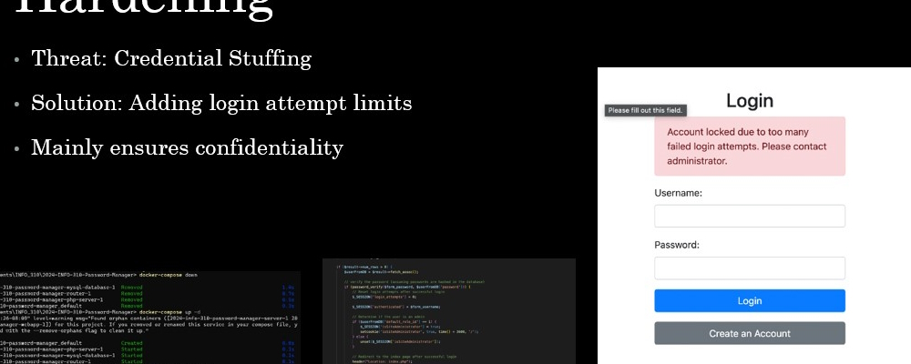
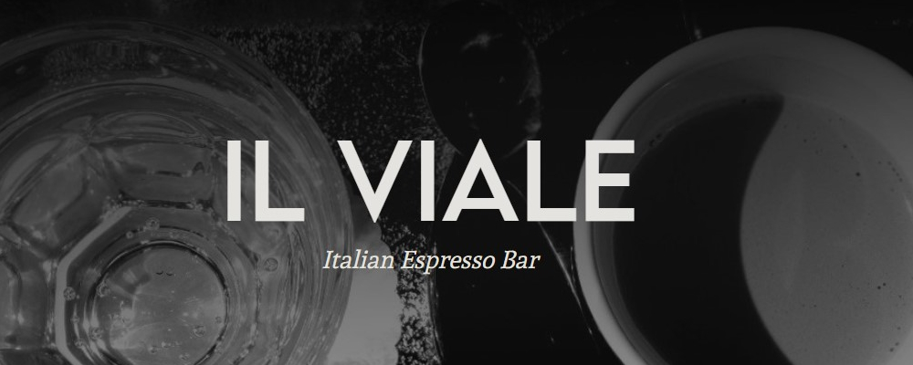
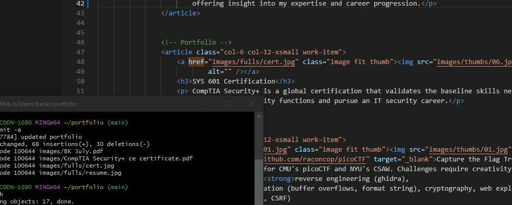

Resume
For a detailed overview of my professional background, skills, and accomplishments, please refer
to my resume linked in the portfolio. It highlights my experience, education, and key projects,
offering insight into my expertise and career progression.

SYS 601 Certification
CompTIA Security+ is a global certification that validates the baseline skills necessary to
perform core security functions and pursue an IT security career.

Currently training for CMU's picoCTF and NYU's CSAW. Challenges require creativity as well as
deep knowledge in reverse engineering,
binary exploitation, cryptography, web exploitation forensics and networking
protocols. Coding languages needed include
Python,
C/C++, JavaScript, Assembly(x86/x64), Bash/Shell scripting, PHP and Java.

Diffie–Hellman (DH) key exchange is a mathematical method of securely exchanging cryptographic
keys over a public channel and was one of the first public-key protocols as conceived by Ralph
Merkle and named after Whitfield Diffie and Martin Hellman. Coded entirely on my own using
Python3.

A Java-based utility for verifying file integrity through MD5 and SHA256
checksums. This tool
ensures downloaded files haven't been tampered with, safeguarding against corrupted or malicious
software. Developed entirely in Java, this project enhanced my skills in
file handling,
cryptographic hashing, and command-line interface integration .

Forked from UW Seattle’s INFO 310, this project secured a password manager using
cryptography,
logging, SSO, and rigorous testing . Developed with PHP, JavaScript, and
Python, it utilized
Docker for containerization and networking skills for secure communication, enhancing my
expertise in secure software development.

As a key member of the development team for the Il Viale website, I was a part of the
software
development
and design efforts . We collaborated closely with the store owner and customers to
ensure the
website met their needs and expectations, focusing on creating an intuitive and engaging user
experience.

The current portfolio webpage you are viewing right now. A good refresher for front end web
development using JavaScript, CSS, SCSS and HTML
{kind=link}
{kind=link}
{kind=link}
{kind=link}
{kind=link}
{kind=link}
{kind=link}
{kind=link}